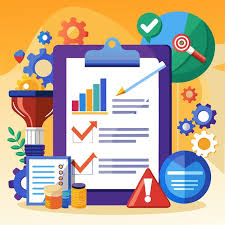
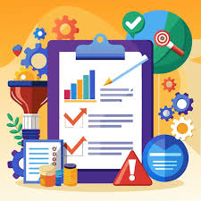
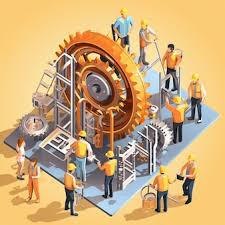
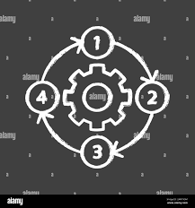

Proceso sistemático de descomponer un sistema, problema o fenómeno en componentes básicos para entender su estructura, funcionamiento y relaciones, facilitando la resolución de problemas o la toma de decisiones.

Proceso sistemático de descomponer un sistema, problema o fenómeno en componentes básicos para entender su estructura, funcionamiento y relaciones, facilitando la resolución de problemas o la toma de decisiones.

Esfuerzo temporal y planificado que se lleva a cabo para alcanzar un objetivo específico, creando un producto, servicio o resultado único, dentro de un marco definido de tiempo, recursos y restricciones.
Proceso de introducir cambios o mejoras significativas en productos, servicios, procesos, métodos o modelos de negocio, que aporten valor, eficiencia o soluciones novedosas a necesidades existentes o emergentes.
Proceso creativo y técnico que combina la generación de ideas, planificación y creación de soluciones funcionales, estéticas y sostenibles para satisfacer necesidades específicas o resolver problemas complejos.

Disciplina que aplica conocimientos científicos, matemáticos y tecnológicos para diseñar, construir y optimizar sistemas, estructuras y procesos que resuelven problemas prácticos y mejoran la calidad de vida.

Proceso de diseño, escritura, prueba y mantenimiento de conjuntos de instrucciones (código) que permiten a una máquina, como una computadora, realizar tareas específicas de manera eficiente.

Conjunto de acciones o pasos secuenciales, interrelacionados y orientados a un objetivo específico, que transforman insumos o entradas en resultados o productos mediante la aplicación de recursos, reglas y técnicas definidas.

Conjunto de elementos o componentes físicos, interconectados y organizados, que transmiten movimiento o fuerza para realizar una función específica dentro de un sistema o máquina.

Capacidad de un sistema, individuo, organización o material para resistir, adaptarse y recuperarse eficientemente frente a cambios, desafíos, adversidades o perturbaciones, manteniendo su funcionalidad o retornando a su estado original.
Planificar, organizar, dirigir y controlar recursos (humanos, financieros, materiales o tecnológicos) de manera eficiente y efectiva para alcanzar objetivos específicos dentro de un sistema, organización o proyecto.
Organización económica, legal y social formada por recursos humanos, materiales y financieros, que realiza actividades productivas, comerciales o de servicios con el objetivo de generar valor, satisfacer necesidades del mercado y obtener beneficios económicos.
Proceso estratégico mediante el cual una empresa identifica, implementa y optimiza oportunidades de crecimiento sostenible, innovaciones, expansión de mercado, alianzas y mejoras internas para aumentar su competitividad, valor y capacidad operativa.